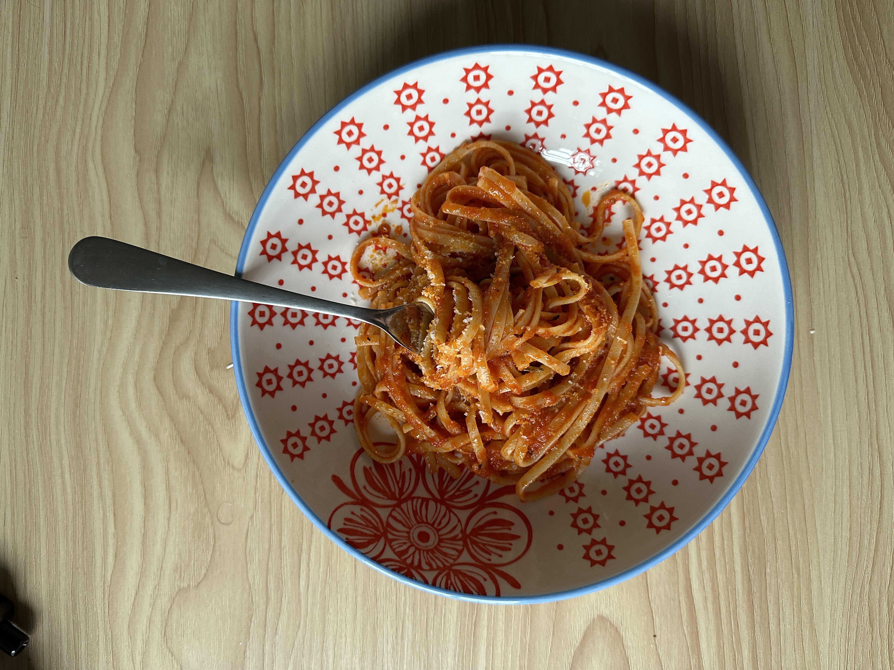

Quick tomato pasta

Weekday sauce is a fresh quick tomato sauce from scratch that you can make easily any night of the week. Taken from NOT ANOTHER COOKING SHOW
Ingredients
- San Marzano tomatoes
- Pasta- linguine preferred
- Basil
- Garlic
- Olive oil
- Parmesan
- Salt
Steps
- Blend tomatoes
- Thinly slice garlic
- Add a good amount of olive oil to pan
- Add garlic and basil to cold oil to allow them to infuse as oil reaches temperature
- Gently heat pan until oil is bubbling
- Add blended tomatoes, with a pinch of salt
- Turn up heat and cook hard and fast for 15 minutes, making sure to keep the sauce moving
- After 15 minutes, begin cooking your pasta
- Add a generous handful of parmesan to the sauce
- Simmer sauce on a low heat until pasta is al dente
- Add pasta into sauce, with more parmesan if you like
- Plate and enjoy (finish with even more parmesan and a sprig of basil)